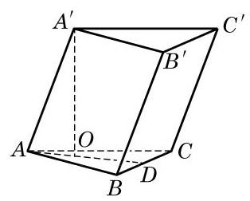
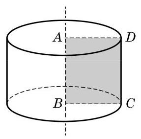

例题 1例 1 已知斜三棱柱 的底面是正三角形,侧棱 ,并且与底面所成角是 . 设侧棱长为 . (1)求此三棱柱的高； (2)求证:侧面 是矩形； (3)求证: 在平面 上的射影 在 的平分线上. 教材 L31–38答案与解析收起 / 展开解(1)如图 11-1-2,过 作 垂直于平面 为垂足,则线段 的长就是三棱柱的高, 就是侧棱 与底面所成角. 由 ,可得三棱柱的高 .  图 11-1-2 (2)由棱柱的定义，可知侧面 是平行四边形. 又因为 ,所以 ,所以侧面 是矩形. (3)因为 ， 垂直于平面 ，由三垂线定理,知 . 延长 交 于点 ,则 是 的边 上的高. 因为 是正三角形,所以 也是 的平分线,即 在平面 上的射影在 的平分线上. 如图 11-1-3, 将矩形 ABCD 绕其一条边 AB 所在直线旋转一周,所形成的几何体叫做圆柱 (cylinder), 所在直线叫做该圆柱的轴,线段 和 分别旋转而成的圆面叫做该圆柱的底面, 线段 旋转而成的曲面叫做该圆柱的侧面， 叫做该圆柱的母线,圆柱的两个底面间的距离(即 的长度)叫做该圆柱的高.  图 11-1-3 根据圆柱的形成过程, 易知圆柱有两个相互平行的底面, 有无穷多条母线, 且所有母线都与其轴平行. 方便起见, 我们把棱柱和圆柱统称为柱体. 教材 L39–60
例题 2例 2 证明: (1) 过圆柱的轴的任意平面与圆柱形成的截面都是全等的矩形; (2)任一平行于圆柱底面的平面与圆柱形成的截面都是与底面全等的圆. 图 11-1-4 教材 L61–68答案与解析收起 / 展开证明(1)设过圆柱的轴 的任一平面与圆柱相截所形成的截面为 ,且 都是底面圆的直径,如图 11-1-4(1)所示. 因为圆柱的底面平行，所以由两个平面平行的性质定理, . 又因为 ,所以 是平行四边形. 由 垂直于底面,知 垂直于底面,因此 . 所以 是矩形,其一组对边的长是底面的直径, 另一组对边的长是圆柱的高, 它们都是完全确定的, 即这些截面互相都全等. (2)任作一个平行于底面并与圆柱相交的平面 ,把平面 截圆柱侧面所形成的封闭曲线记为 ,设 是 上的任意一点, 如图 11-1-4(2)所示. 由圆柱的形成过程，知圆柱侧面上任意一点到圆柱的轴的距离都等于圆柱的底面半径,所以 到点 的距离必等于底面半径,从而 所围出的截面是一个与底面全等的圆. 教材 L69–72
练习11.1(1) · 1 证明: 棱柱的所有侧面都是平行四边形. 教材 L75–76答案与解析收起 / 展开 因为每一个侧面的侧棱都平行, 又因为上、下底面平行, 这个侧面与上、下底面的交线, 即上、下底面对应的多边形的棱分别平行, 所以侧面是平行四边形. 教参 L264–265
练习11.1(1) · 2 证明: 平行于棱柱底面的平面截这个棱柱所得到的截面是一个与底面全等的多边形. 教材 L77–78答案与解析收起 / 展开 由于截面与上、下底面平行, 得到两个新的几何体, 其中一个新的几何体的侧棱平行, 上、下底面多边形的一边和截面对应的一边平行, 就可以证明截面和上、下底面多边形的对应边平行且相等, 从而得证. 教参 L266–267
练习11.1(1) · 3 一个水平放置的封闭圆柱形容器中装了部分的水，此时水面的形状是什么图形？如果把圆柱沿侧面放倒在水平的面上, 那么水面的形状又会是什么图形? 请分别画出以上两种情形的示意图. 教材 L79–80答案与解析收起 / 展开 水平放置的圆柱水面是圆面, 放倒的圆柱水面是矩形面. 图略. 教参 L268–269
例题 3例 3 已知三棱柱的底面三角形 的三边长分别是 ,侧棱 ,且侧棱 与底面所成的角为 . 求这个三棱柱的体积. 图 11-1-8 教材 L127–132答案与解析收起 / 展开解 如图 11-1-8,设 在平面 上的射影为 ,则 是棱柱的高,且 . 因为 是直角三角形,所以 又因为 ,所以 . 从而棱柱的底面积 . 所以,棱柱的体积 . 教材 L133–144
练习11.1(2) · 1 在修建铁路时, 路基需要用碎石铺垫. 已知路基的形状及尺寸如图所示 (单位: m),每修建 铁路需要碎石多少 ? (第 1 题) 教材 L147–156 · 教材 L149–151答案与解析收起 / 展开 . 教参 L272–273
练习11.1(2) · 3 如图, 查一查六角螺帽的尺寸规格, 并说明如何计算它的体积. (第 3 题) 教材 L159–160 · 教材 L153–155答案与解析收起 / 展开 设内孔半径为 ,六边形的边长为 ,螺母高为 , 教参 L276–279
例题 4例 4 一张 A4 纸的规格为: ，把它作为一个圆柱的侧面. 求卷成的圆柱体体积. (结果精确到 ) 教材 L195–196答案与解析收起 / 展开解 (1) 如果以 的边为高,那么 , ,此时圆柱体体积为 (2)如果以 的边为高,那么 , 此时圆柱体体积为 教材 L197–208
练习11.1(3) · 1 如图(图中单位:cm)是一种机器零件，零件下部是实心的直六棱柱(底面是正六边形，侧面是全等的矩形)，上部是实心的圆柱. 求此零件的体积与表面积. (结果分别精确到 与 ) (第 1 题) 教材 L215–216 · 教材 L211–213答案与解析收起 / 展开 . 教参 L282–285
练习11.1(3) · 2 要给一批共 10000 根相同规格的空心钢管镀锌，钢管的长度为 ,内外直径分别为 与 . 若电镀这批钢管每平方米要用锌 ,求需要用锌的总量. (结果精确到 ) 教材 L217–218答案与解析收起 / 展开 . 教参 L286–287
练习11.1(3) · 3 证明: 表面积相等的长方体中, 正方体的体积最大. 教材 L219–220答案与解析收起 / 展开 若 ,则 , 即 ,且当且仅当 时取等号. 设长方体的长、宽、高分别为 ,则 ,当且仅当 时,即长方体为正方体时体积最大. 教参 L288–289
习题11.1A · 5 已知侧面都是矩形的四棱柱, 侧棱长为 5, 底面是边长为 2 的菱形, 则这个棱柱的侧面积是___. 教材 L233–234答案与解析收起 / 展开5.40. 教参 L302–303
习题11.1A · 8 已知三棱柱 的三个侧面均是矩形,求证: 它的任意两个侧面的面积之和大于第三个侧面的面积. 教材 L239–240答案与解析收起 / 展开 设底面三边长分别为 ,高为 ,由 得 得证. 教参 L308–309
习题11.1B · 2 如图, 设圆柱有一个内接棱柱(即棱柱的侧棱都是圆柱的母线, 棱柱的两个底面分别在圆柱的两个底面内). 已知圆柱的体积是 ,棱柱的底面是边长为 2 的正三角形. 求棱柱的体积. (第 2 题) 教材 L245–254 · 教材 L247–249答案与解析收起 / 展开 三棱柱的体积为 9. 教参 L314–315
习题11.1B · 3 如图,一个直三棱柱形容器中盛有水,且侧棱 . 当侧面 水平放置时,液面恰好过 的中点. 当底面 水平放置时,液面高为多少? (第 3 题) 教材 L255–256 · 教材 L251–253答案与解析收起 / 展开 设 的面积为 ,则由 ,得 . 教参 L316–317